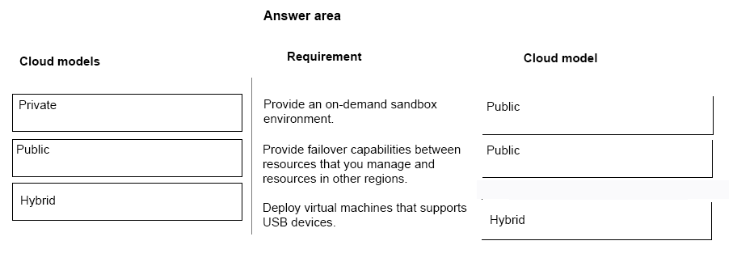
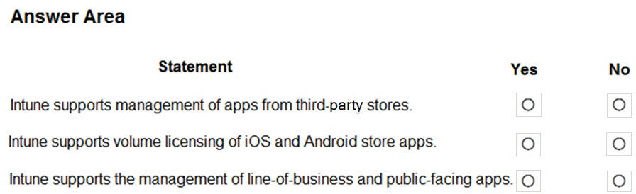
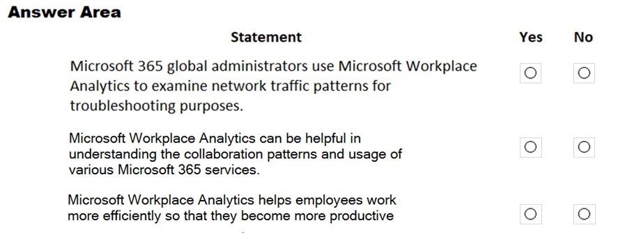

Microsoft 365 Fundamentals Certification (MS-900) Exam Questions
Attention
The questions in this website is a collection of free available resources from several sources. The use of any parts for commercial use is strictly prohabit. For personnal use only.
Question 1
DRAG DROP -
You are implementing cloud services.
Match each scenario to its service. To answer, drag the appropriate scenario from the column on the left to its cloud service on the right. Each scenario may be used only once.
NOTE: Each correct selection is worth one point.
Select and Place:
Answer 1
Reference:
[https://docs.microsoft.com/en-us/office365/enterprise/hybrid-cloud-overview]https://docs.microsoft.com/en-us/office365/enterprise/hybrid-cloud-overview
Question 2
You need to identify which Microsoft platforms provide hybrid capabilities for migrating from an on-premises deployment.
Which two platforms provide hybrid capabilities for migration? Each correct answer provides a complete solution. (Choose two.)
NOTE: Each correct selection is worth one point. (2 answers)
A. Microsoft Skype for Business
B. Microsoft Yammer
C. Microsoft Exchange
D. Microsoft Teams
Answer 2
Correct Answer: A and C
Reference:
Question 3
A company is moving to Microsoft Azure. Some applications cannot be moved.
You need to identify which applications will remain in a hybrid environment after the migration.
Which applications will remain in a hybrid environment?
A. applications that manage sensitive information
B. applications that use a USB-token device to control access
C. legacy applications that use a message-based interface
D. a new server that runs several line-of-business applications
Answer 3
Correct Answer: C
Question 4
HOTSPOT -
For each of the following statements, select Yes if the statement is true. Otherwise, select No.
NOTE: Each correct selection is worth one point.
Hot Area:
Answer 4
Correct Answer: YES-NO-YES
Reference:
https://www.liquidweb.com/blog/private-cloud/
https://azure.microsoft.com/en-gb/product-categories/security/
Question 5
DRAG DROP -
You are the Microsoft 365 administrator for a company.
You must provide infrastructure recommendations. All proposed solutions must minimize costs.
You need to identify the appropriate cloud model for the given scenarios.
Which cloud models should you use?
To answer, drag the appropriate cloud models to the correct requirements. Each cloud model may be used once, more than once, or not at all. You may need to drag the split bar between panes or scroll to view content.
NOTE: Each correct selection is worth one point.
Select and Place:

Answer 5

Reference:
https://azure.microsoft.com/en-us/overview/what-are-private-public-hybrid-clouds/
https://www.thinksys.com/cloud/private-vs-public-vs-hybrid-cloud/
Question 6
You are the Microsoft 365 administrator for a company.
The company runs SharePoint Server and Exchange Server in an on-premises datacenter. The site collection for the finance department is currently encrypted using third-party software.
You need to move as many services to Microsoft 365 as possible.
What should you do?
A. Migrate all SharePoint data and Exchange mailboxes to Microsoft 365.
B. Leave SharePoint data for finance department users on-premises. Migrate all other SharePoint data and Exchange mailboxes to Microsoft 365.
C. Leave mailboxes for finance department users on-premises. Migrate all other SharePoint data and Exchange mailboxes to Microsoft 365.
D. Leave SharePoint data and mailboxes for finance department users on-premises. Migrate all other SharePoint data and Exchange mailboxes to Microsoft 365.
Answer 6
Correct Answer: A
Question 7
A company has an Exchange Server environment. The company plans to migrate to the cloud.
You need to recommend a cloud model that meets the following requirements:
- Upgrade the existing email environment
- Minimize server and application maintenance
Which model should you recommend?
A. Platform as a service (PaaS)
B. Windows as a service (WaaS)
C. Software as a service (SaaS)
D. Infrastructure as a service (IaaS)
Answer 7
Correct Answer: C
Reference:
Question 8
DRAG DROP -
You are the Azure administrator for a company. The company uses only Platform as a Service (PaaS).
You need to identify which solution components Microsoft must manage and which solution components your IT staff must manage.
Match each management owner to its component. To answer, drag the responsible party from the column on the left to its component on the right. Each party may be used once, more than once, or not at all.
NOTE: Each correct selection is worth one point.
Select and Place:
Answer 8
Reference:
https://www.itprotoday.com/industry-perspectives/choosing-cloud-model-saas-versus-paas
Question 9
An organization is moving to Microsoft Azure and Microsoft 365.
You need to classify the following components:
- website hosting
- a virtual machine that runs Linux
- document storage that uses OneDrive for Business
Match each component to its classification. To answer, drag the appropriate components from the column on the left to its classifications on the right. Each component may be used once, more than once, or not at all.
NOTE: Each correct selection is worth one point.
Select and Place:
Answer 9
Question 10
HOTSPOT -
For each of the following statements, select Yes if the statement is true. Otherwise, select No.
NOTE: Each correct selection is worth one point.
Hot Area:
Answer 10
Question 11
HOTSPOT -
For each of the following statements, select Yes if the statement is true. Otherwise, select No.
NOTE: Each correct selection is worth one point.
Hot Area:
Answer 11
Question 12
DRAG DROP -
You are the Microsoft 365 administrator for a company that uses only on-premises resources. The company does not have a private cloud.
You need to deploy cloud-based resources for the company that minimize costs.
Which cloud models should you use? To answer, drag the appropriate cloud models to the correct requirements. Each cloud model may be used once, more than once, or not at all. You may need to drag the split bar between panes or scroll to view content.
NOTE: Each correct selection is worth one point.
Select and Place:
Answer 12
Question 13
This question requires that you evaluate the underlined text to determine if it is correct.
Microsoft 365 is a Platform as a service (PaaS).
Review the underlined text. If it makes the statement correct, select No change is needed. If the statement is incorrect, select the answer choice that makes the statement correct.
A. Infrastructure as a service (IaaS)
B. Windows as a service (WaaS)
C. Software as a service (Saas)
D. No change is needed
Answer 13
Correct Answer: C
Microsoft 365 is SaaS, which provides an online version of MS Office Suite (Office Web Apps) along with SharePoint Server, Exchange Server and Lync Server.
Reference:
Question 14
DRAG DROP -
Match each scenario to its platform or platforms.
Instructions: To answer, drag the appropriate scenario from the column on the left to its platform or platforms on the right. Each scenario may be used only once.
NOTE: Each correct match is worth one point.
Select and Place:
Answer 14
Question 15
HOTSPOT -
For each of the following statements, select Yes if the statement is true. Otherwise, select No.
NOTE: Each correct selection is worth one point.
Hot Area:
Answer 15
You can use Conditional Access to configure Multi-Factor Authentication policies. Conditional Access runs on Azure AD
Reference:
https://docs.microsoft.com/en-us/azure/active-directory/manage-apps/application-proxy-security
https://thesleepyadmins.com/2019/02/10/configure-mfa-for-azure-application-proxy/
Question 16
HOTSPOT -
For each of the following statements, select Yes if the statement is true. Otherwise, select No.
NOTE: Each correct selection is worth one point.
Hot Area:
Answer 16
Question 17
You need to deploy an application to Microsoft Infrastructure as a Service (IaaS).
Which three features are part of IaaS? Each correct answer presents a complete solution.
NOTE: Each correct selection is worth one point. (3 answers)
A. business analytics
B. real-time monitoring Most Voted
C. operating system
D. servers and storage Most Voted
E. firewall and network security
Answer 17
Correct Answer: C, D and E
Question 18
HOTSPOT -
For each of the following statements, select Yes if the statement is true. Otherwise, select No.
NOTE: Each correct selection is worth one point.
Hot Area:
Answer 18
Question 19
Which type of cloud model provides access to Microsoft Office apps?
A. platform as a service (PaaS)
B. infrastructure as a service (IaaS)
C. software as a service (SaaS)
Answer 19
Correct Answer: C
Microsoft 365 is SaaS, which provides an online version of MS Office Suite (Office Web Apps) along with SharePoint Server, Exchange Server and Lync Server.
Reference:
Question 20
HOTSPOT -
For each of the following statements, select Yes if the statement is true. Otherwise, select No.
NOTE: Each correct selection is worth one point.
Hot Area:
Answer 20
This is a vague question. The second answer depends on the definition of a "few on-premises" resources.
Question 21
HOTSPOT -
For each of the following statements, select Yes if the statement is true. Otherwise, select No.
NOTE: Each correct selection is worth one point.
Hot Area:
Answer 21
Question 22
HOTSPOT -
For each of the following statements, select Yes if the statement is true. Otherwise, select No.
NOTE: Each correct selection is worth one point.
Hot Area:
Answer 22
Question 23
HOTSPOT -
For each of the following statements, select Yes if the statement is true. Otherwise, select No.
NOTE: Each correct selection is worth one point.
Hot Area:
Answer 23
Question 24
A company has an on-premises application server.
The company wants to use some of the services in Microsoft 365 with the on-premises application server.
You need to choose a cloud deployment model that meets the requirement.
What should you choose?
A. Private
B. Hybrid
C. Public
Answer 24
Correct Answer: B
Question 25
DRAG DROP -
CompanyA, CompanyB, and CompanyC use cloud resources as shown in the following table.
Match each cloud model to the appropriate company. To answer, drag the appropriate cloud model from the column on the left to the company on the right. Each cloud model may be used once, more than once, or not at all.
NOTE: Each correct match is worth one point.
Select and Place:
Answer 25
Question 26
DRAG DROP -
You need to identify the software as a service (SaaS), platform as a service (PaaS), and infrastructure as a service (IaaS) services provided by Microsoft 365.
What type of cloud service model does each cloud service represent?
To answer, drag the appropriate cloud service models to the correct cloud services. Each cloud service model may be used once, more than once, or not at all.
You may need to drag the split bar between panes or scroll to view content.
NOTE: Each correct selection is worth one point.
Select and Place:
Answer 26
Question 27
DRAG DROP -
You are planning to deploy Microsoft 365 for a company.
You need to determine which cloud services to use.
Which cloud services should you use? To answer, drag the appropriate cloud services to the correct requirements. Each cloud service may be used once, more than once, or not at all. You may need to drag the split bar between panes or scroll to view content.
NOTE: Each correct selection is worth one point.
Select and Place:
Answer 27
Question 28
HOTSPOT -
For each of the following statements, select Yes if the statement is true. Otherwise, select No.
NOTE: Each correct selection is worth one point.
Hot Area:
Answer 28
Question 29
You are the Microsoft 365 administrator for an organization.
A group of employees and users outside the company must be able to collaborate on a project in real time by using a whiteboard.
In the Microsoft 365 admin portal, which Office 365 product should you configure?
A. Microsoft Yammer
B. Microsoft Office Delve
C. Microsoft SharePoint Online
D. Microsoft Teams
Answer 29
Correct Answer: D
Reference:
https://docs.microsoft.com/en-us/microsoftteams/manage-whiteboard
Question 30
HOTSPOT -
For each of the following statements, select Yes if the statement is true. Otherwise, select No.
NOTE: Each correct selection is worth one point.
Hot Area:
Answer 30
Reference:
https://docs.microsoft.com/en-us/workplace-analytics/myanalytics/use/add-in
https://docs.microsoft.com/en-us/workplace-analytics/myanalytics/mya-landing-page
https://docs.microsoft.com/en-us/workplace-analytics/index-orig
Question 31
HOTSPOT -
You plan to deploy the Report Message add-in to Microsoft Outlook.
How can you deploy the add-in? For each of the following statements, select Yes if the statement is true. Otherwise, select No.
NOTE: Each correct selection is worth one point.
Hot Area:
Answer 31
Reference:
https://docs.microsoft.com/en-us/office365/securitycompliance/enable-the-report-message-add-in
Question 32
You need to reduce the amount of time that the IT team spends on user support.
What are three possible ways to achieve this goal? Each correct answer presents a complete solution.
NOTE: Each correct selection is worth one point.
A. Enable Microsoft Office 365 Customer Lockbox
B. Upgrade all client devices to Windows 10
C. Use Windows AutoPilot to deploy devices
D. Deploy Microsoft MyAnalytics to devices
E. Deploy Microsoft Office 365 Professional Plus to all client devices
Answer 32
Correct Answer: A, C and E
Reference:
https://docs.microsoft.com/en-us/windows/deployment/windows-autopilot/windows-autopilot
Question 33
DRAG DROP -
An organization plans to deploy Microsoft Office to all employees.
You need to select the appropriate Office plans and minimize costs.
Which Office plans should you use? To answer, drag the appropriate Office plans to the correct options. Each Office plan may be used once, more than once, or not at all. You may need to drag the split bar between panes or scroll to view content.
NOTE: Each correct selection is worth one point.
Select and Place:
Answer 33

Reference:
https://docs.microsoft.com/en-us/deployoffice/about-office-365-proplus-in-the-enterprise
Question 34
HOTSPOT -
A company plans to deploy Microsoft Intune.
Which types of apps can be managed by Intune?
For each of the following statements, select Yes if the statement is true. Otherwise, select No.
NOTE: Each correct selection is worth one point.
Hot Area:

Answer 34
Question 35
You are the Microsoft 365 administrator for a company.
You install Microsoft Office 365 ProPlus on five devices. You deactivate the Microsoft Office 365 ProPlus license on one device.
Which task can you perform on the deactivated device?
A. Edit a column
B. Create a document
C. Co-author a document
D. View a document
Answer 35
Correct Answer: D
When you deactivate a Microsoft Office 365 ProPlus license, Office 365 ProPlus remains installed on the computer, but you can only view and print documents. All features for editing or creating new documents are disabled.
Note:
There are several versions of this question in the exam. The question has two possible correct answers:
-
View a document
-
Print a document
Other incorrect answer options you may see on the exam include the following:
-
Leave a comment in a document.
-
Start a new document from a template.
-
Set properties on a document.
-
Create a document
-
Edit a document
-
Co-author a document
-
Edit a column
Reference:
Question 36
DRAG DROP -
Match each Microsoft 365 feature to its availability.
Instructions: To answer, drag the appropriate feature from the column on the left to its availability on the right. Each feature may be used once, more than once, or not at all.
NOTE:
Each correct match is worth one point.
Select and Place:
Answer 36
Question 37
HOTSPOT -
A company plans to change from supporting servers on-premises to using Microsoft 365 services.
You need to determine which Microsoft 365 workload is appropriate to replace each on-premises service.
Which workloads should you use? To answer, select the appropriate options in the answer area.
NOTE: Each correct selection is worth one point.
Hot Area:
Answer 37
Question 38
Your company has a Microsoft Office 365 subscription.
You need to co-author files with other users.
Which tool should you use?
A. Microsoft SharePoint Online
B. Microsoft Skype for Business Online
C. Microsoft Office Delve
D. Microsoft Exchange Online
Answer 38
Correct Answer: A
Question 39
You are the Microsoft 365 administrator for a company.
You install Microsoft Office 365 ProPlus on five devices. You deactivate one device.
Which task can you perform on the deactivated device?
A. Print a document.
B. Leave a comment in a document.
C. Start a new document from a template.
D. Set properties on a document.
Answer 39
Correct Answer: A
When you deactivate a Microsoft Office 365 ProPlus license, Office 365 ProPlus remains installed on the computer, but you can only view and print documents. All features for editing or creating new documents are disabled.
Note:
There are several versions of this question in the exam. The question has two possible correct answers:
-
View a document
-
Print a document
Other incorrect answer options you may see on the exam include the following:
-
Leave a comment in a document.
-
Start a new document from a template.
-
Set properties on a document.
-
Create a document
-
Edit a document
-
Co-author a document
-
Edit a column
Reference:
Question 40
You are the Microsoft 365 administrator for a company.
Users in the IT department must receive new Office 365 preview features before the features are deployed to other users in the company.
You need to ensure only the users in the IT department receive preview features.
Which two actions should you perform? Each correct answer represents part of the solution. (Choose two.)
NOTE: Each correct selection is worth one point. (2 answers)
A. Instruct users to navigate to http://insider.office.com and sign up for Office Insider.
B. Instruct users to update Office ProPlus.
C. In the organizational profile, set the update preference to Targeted release for selected users.
D. Instruct users to uninstall Office ProPlus and then reinstall the software.
E. In the organizational profile, set the update preference to Standard release.
Question 41
A company has a Microsoft 365 subscription. You deploy Windows 10 devices by using Windows Autopilot.
You need to ensure that team members can access data that is stored in OneDrive for Business when team members are at remote sites.
What should you do?
A. Enroll team members in Microsoft Azure AD multi-factor authentication.
B. Add the devices to Microsoft 365 using the Devices tile.
C. Enroll devices in Microsoft Intune.
D. Direct team members to sign in to their devices using their Microsoft Azure AD credentials.
Answer 41
Correct Answer: D
Question 42
You are a Microsoft 365 administrator for a company.
Microsoft plans to release a new feature for Microsoft Excel.
You need to ensure that the feature becomes available for employees to install as soon as possible.
To which release channel should you subscribe?
A. Microsoft release
B. Standard release
C. Office 365 team release
D. Targeted release
Answer 42
Correct Answer: D
Reference:
Question 43
DRAG DROP -
You are a member of a Microsoft Office 365 group named Sales. You create a proposal for a customer by using Word Online.
All team members must be able to review and make changes to the proposal at the same time. After the proposal is completed, you must share the final document with the customer in read-only format.
You need to ensure that the customer sees the most recent versions of the document.
Which three actions should you perform in sequence? To answer, move the appropriate actions from the list of actions to the answer area and arrange them in the correct order.
Select and Place:
Question 44
DRAG DROP -
You are the Microsoft 365 administrator for a company.
You need to identify the different features of MyAnalytics and Workspace Analytics.
What are the different features? To answer, drag the appropriate applications to the correct features. Each application may be used once, more than once, or not at all. You may need to drag the split bar between panes or scroll to view content.
NOTE: Each correct selection is worth one point.
Select and Place:
Answer 44
Reference:
https://products.office.com/en-za/business/compare-more-office-365-for-business-plans
https://techcommunity.microsoft.com/t5/MyAnalytics/Microsoft-Workplace-Analytics/td-p/84884
https://docs.microsoft.com/en-us/workplace-analytics/setup/upload-organizational-data
Question 45
Your company is evaluating the differences between deployments of Office 365 ProPlus and Office 2016.
You need to determine the installation features of each deployment.
Which installation feature is unique to Office 365 ProPlus?
A. Installation can be completed by using Click-to-Run.
B. Installation can be completed by using System Center Configuration Manager.
C. Installation is available in both 32-bit and 64-bit versions.
D. Installation is on the user's local computer.
Answer 45
Correct Answer: A
Question 46
You use Microsoft 365 Usage Analytics.
You need to know the number of users who are active today and were also active last month.
Which adoption metric should you use?
A. MoMReturningUsers
B. EnabledUsers
C. ActiveUsers
D. CumulativeActiveUsers
Answer 46
Correct Answer: A
Reference:
Question 47
You are a Microsoft 365 administrator for a company. You use products that are in private preview, public preview, or general availability (GA).
You need to determine at which phases you can receive support from the Microsoft 365 admin center.
For which product phase or phases can you receive support?
A. GA, private preview, and public preview
B. GA and private preview only
C. GA only
D. GA and public preview only
E. public preview and private preview only
Answer 47
Correct Answer: C
Reference:
https://www.rmsource.com/blogsite/Pages/Microsoft-Azure---Public-Preview-Release-Status.aspx
Question 48
DRAG DROP -
You are the Microsoft 365 administrator for a company.
Which Microsoft 365 components should employees use?
Match each component to its task. To answer, drag the appropriate components from the column on the left to the tasks on the right. Each component may be used once, more than once, or not at all.
NOTE: Each correct match is worth one point.
Select and Place:
Answer 48
Reference:
https://products.office.com/en-us/microsoft-teams/group-chat-software
https://www.microsoft.com/en-cy/cloud-platform/enterprise-mobility-security
Question 49
DRAG DROP -
Your organization is considering subscribing to Microsoft 365.
You need to educate stakeholders about how Microsoft 365 component enable effective collaboration.
Match each Microsoft 365 service to the best service description. To answer, drag the appropriate services to the correct descriptions. Each service may be used once, more than once, or not at all. You may need to drag the split bar between panes or scroll to view content.
NOTE: Each correct match is worth one point.
Select and Place:
Answer 49
Reference:
https://products.office.com/en-us/microsoft-teams/group-chat-software
https://products.office.com/en-za/onedrive-for-business/online-cloud-storage
https://products.office.com/en-us/sharepoint/sharepoint-online-collaboration-software
Question 50
HOTSPOT -
You need to ensure that all users in your tenant have access to the earliest release of updates in Microsoft 365.
Which organizational release option should you use? To answer, select the appropriate options in the answer area.
Hot Area:

Answer 50
Standard release is the default setting. It implements updates on final release rather than early release.
First release is now called Targeted release. Targeted release is the early release of updates for early feedback. You can choose to have individuals or the entire organization receive updates early.
Reference:
https://docs.microsoft.com/en-us/office365/admin/manage/release-options-in-office-365
Question 51
DRAG DROP -
An organization is considering migrating resources to the cloud. The company does not plan to deploy Microsoft Azure ExpressRoute or site-to-site VPNs.
You need to identify which workloads you can migrate to the cloud.
Which workloads you can migrate to the cloud? To answer, drag the appropriate actions to the correct workloads. Each action may be used once, more than once, or not at all. You may need to drag the split bar between panes or scroll to view content.
NOTE: Each correct selection is worth one point.
Select and Place:
Answer 51
Question 52
You are the desktop administrator for an organization.
You need to ensure that Office 365 ProPlus is installed on all employee computers.
Which three tools can you use to deploy Office 365 ProPlus? Each correct answer presents a complete solution.
NOTE: Each correct selection is worth one point. (3 answers)
A. Microsoft Intune
B. System Center Operations Manager
C. Windows Installer (MSI) package
D. System Center Configuration Manager
E. Office Deployment Tool
Answer 52
Correct Answer: A, D and E
Microsoft Intune allows you to deploy Office 365 ProPlus applications to Windows 10 devices from the cloud.
System Center Configuration Manager allows you to deploy Office 365 ProPlus to client computers from a local source, using your Configuration Manager distribution points.
The Office Deployment Tool (ODT) allows you to deploy Office 365 ProPlus to client computers from the Office Content Delivery Network (CDN) or from a shared folder on your network.
Reference:
https://docs.microsoft.com/en-us/DeployOffice/deploy-office-365-proplus-from-the-cloud
https://docs.microsoft.com/en-us/DeployOffice/deploy-office-365-proplus-from-a-local-source
Question 53
DRAG DROP -
A company plans to deploy Microsoft 365.
You need to identify differences between the features in Exchange Online and Exchange Server.
Match the appropriate features to the corresponding supported environments. To answer, drag the appropriate environments to the correct features. Each environment may be used once, more than once, or not at all. You may need to drag the split bar between panes or scroll to view content.
NOTE: Each correct selection is worth one point.
Select and Place:
Answer 53
Reference:
Question 54
HOTSPOT -
A company has Microsoft Surface devices that run Windows 10. The company plans to deploy devices by using Windows AutoPilot.
You need to import a CSV file to ensure that the devices are ready for deployment.
In the Microsoft 365 Device Management portal, which two blades should you use? To answer, select the appropriate options in the dialog box in the answer area.
NOTE: Each correct selection is worth one point.
Hot Area:
Question 55
DRAG DROP -
You are the Microsoft 365 administrator for a company. The company supports an aggressive rollout of features.
You need to release features as soon as they are released.
Which feature phase should you use for each development step? To answer, drag the appropriate feature phases to the correct development steps. Each feature phase may be used once, more than once, or not at all. You may need to drag the split bar between panes or scroll to view content.
NOTE: Each correct selection is worth one point.
Select and Place:
Answer 55
Question 56
A company has offices in multiple regions. The company has a Microsoft 365 subscription.
The company is developing a line-of-business (LOB) app. The app must meet the following requirements.
- Ensure availability regardless of an employee's location.
- Track the devices on which the app is installed by using Microsoft cloud services.
- Minimize costs.
What should you do?
A. Copy the app to Microsoft OneDrive. Allow employees to download and install the app from One Drive.
B. Deploy the app to all devices by using Microsoft Intune.
C. Copy the app to local servers. Allow employees to download and install the app from the servers.
D. Deploy the app to all devices by using group policy.
Answer 56
Correct Answer: B
Reference:
https://docs.microsoft.com/en-us/mem/intune/apps/apps-windows-10-app-deploy
https://docs.microsoft.com/en-us/mem/intune/apps/apps-monitor
Question 57
You need to determine the lifecycle of products and features in Microsoft 365.
What should you use?
A. support.microsoft.com
B. Microsoft Lifecycle Services
C. docs.microsoft.com
D. Microsoft 365 Roadmap
Question 58
A company plans to migrate to Microsoft 365. Corporate devices run Windows 7 or Windows 10.
You must upgrade all devices to use Office 365 ProPlus and minimize costs.
You need to standardize corporate device deployments.
Which three actions should you perform? Each correct answer presents part of the solution.
NOTE: Each correct selection is worth one point.
A. Implement Windows AutoPilot
B. Deploy policies by using Configuration Manager
C. Upgrade all devices to Windows 10
D. Deploy policies by using Microsoft Intune
E. Instruct users to download and install a Windows Installer package for Office 365 ProPlus
Answer 58
Correct Answer: A, C and D
Question 59
HOTSPOT -
You are the Microsoft Office 365 administrator for a company.
The company has the following requirements:
- Users must be able to use incompatible applications on a Windows 10 device.
Cloud-based applications must use the same credentials as on-premises applications.
- Users must be prevented from copying company data from managed applications installed on unmanaged devices.
You need to determine which technologies should be used for each requirement.
Which technologies should be used? To answer, select the appropriate options in the answer area.
Hot Area:
Answer 59
Reference:
https://www.microsoft.com/en-us/microsoft-365/modern-desktop/enterprise/windows-virtual-desktop
https://docs.microsoft.com/en-us/azure/active-directory/hybrid/whatis-azure-ad-connect
Question 60
HOTSPOT -
For each of the following statements, select Yes if the statement is true. Otherwise, select No.
NOTE: Each correct selection is worth one point.
Hot Area:

Answer 60
Reference:
https://docs.microsoft.com/en-us/workplace-analytics/index-orig
https://docs.microsoft.com/en-us/workplace-analytics/overview/get-started
Question 61
A company assigns a Microsoft 365 license to each employee.
You need to install Microsoft Office 365 ProPlus on each employee laptop computer.
Which three methods can you use? Each correct answer presents a complete solution.
NOTE: Each correct selection is worth one point. (3 answers)
A. Use System Center Configuration Manager (SCCM) to deploy Office 365 ProPlus from a local distribution source.
B. Use System Center Configuration Manager (SCCM) to deploy Office 365 ProPlus from an Office Windows Installer (MSI) package.
C. Download the Office 365 ProPlus Windows Installer (MSI) package. Install Office 365 ProPlus from a local distribution source.
D. Use the Office Deployment Tool (ODT) to download installation files to a local distribution source. Install Office 365 ProPlus by using the downloaded files.
E. Enable users to download and install Office 365 ProPlus from the Office 365 portal.
Answer 61
Correct Answer: A, D and E
Reference:
https://docs.microsoft.com/en-us/deployoffice/teams-install
https://docs.microsoft.com/en-us/deployoffice/deploy-office-365-proplus-from-the-cloud
https://docs.microsoft.com/en-us/deployoffice/deploy-office-365-proplus-from-a-local-source
Question 62
HOTSPOT -
For each of the following statements, select Yes if the statement is true. Otherwise, select No.
NOTE: Each correct selection is worth one point.
Hot Area:
Answer 62

Question 63
DRAG DROP -
A company uses Microsoft 365 and Windows 10.
You need to identify which servicing tools the company should use for Windows 10.
Which servicing tool should you choose for each description? To answer, drag the appropriate servicing tools to the correct servicing tool descriptions. Each servicing tool may be used once, more than once, or not at all. You may need to drag the split bar between panes or scroll to view content.
NOTE: Each correct selection is worth one point.
Select and Place:
Answer 63
Question 64
HOTSPOT -
A company plans to deploy Microsoft 365.
You need to identify the appropriate collaboration solution for each task.
Which solution should you choose for each task? To answer, select the appropriate options in the answer area.
NOTE: Each correct selection is worth one point.
Hot Area:
Answer 64
Question 65
A company plans to deploy automated workflows for managers to approve.
You need to determine which Microsoft 365 products allow access to personal workflows.
Which two products should the managers use? Each correct answer presents a partial solution.
NOTE: Each correct selection is worth one point. (2 answers)
A. Power Automate
B. Microsoft Excel
C. Yammer
D. Microsoft Teams
Answer 65
Correct Answer: A and D
Power Automate is the new name for Microsoft Flow.
Reference:
https://flow.microsoft.com/en-us/blog/microsoft-flow-in-microsoft-teams/
Question 66
A company deploys Windows 10 to all devices.
Feature updates to Windows as a service must be installed as frequently as possible.
Which Windows 10 service channel installs updates most frequently?
A. Windows Insider Program Servicing channel
B. Long-term Servicing channel
C. Semi-Annual Servicing channel
Answer 66
Correct Answer: A
Reference:
https://docs.microsoft.com/en-us/windows/deployment/update/get-started-updates-channels-tools
Question 67
A company uses Microsoft 365.
The company wants to provide workflows of business tasks that connect to Microsoft Outlook and Microsoft Teams.
You need to choose a solution that meets the requirement.
Which solution should you choose?
A. Power Automate
B. Microsoft Bookings
C. Microsoft Planner
D. Power BI
Answer 67
Correct Answer: A
Question 68
DRAG DROP -
A company uses Microsoft 365.
A manager wants to increase the efficiency of team members.
You need to identify the tools that can help improve team effectiveness.
Which tool should you identify for each requirement? To answer, drag the appropriate tools to the correct requirements. Each tool may be used once, more than once, or not at all. You may need to drag the split bar between panes or scroll to view content.
NOTE: Each correct selection is worth one point.
Select and Place:
Answer 68

Reference:
https://docs.microsoft.com/en-us/workplace-analytics/use/explore-metrics-meetings-overview
Question 69
HOTSPOT -
For each of the following statements, select Yes if the statement is true. Otherwise, select No.
NOTE: Each correct selection is worth one point.
Hot Area:
Answer 69
Reference:
https://office365adoption.com/better-manage-customer-appointments-microsoft-bookings/
Question 70
HOTSPOT -
What happens when you enable external access by using the Microsoft 365 admin portal? To answer, select the appropriate options in the answer area.
Hot Area:
Question 71
You are the Microsoft 365 administrator for a company. You deploy Windows 10 to all devices by using Windows Autopilot.
You need to ensure that employees can install Microsoft Office 365 ProPlus on their devices.
What are two possible ways to achieve this goal? Each correct answer presents a part of a solution.
NOTE: Each correct selection is worth one point.
A. Use the self-install option on the Office 365 dashboard
B. Download and install the Office ProPlus Windows Installer (MSI) package
C. Enable auto-deployment of Office 365 apps for all devices
D. Update the Windows AutoPilot deployment profile to include the Office 365 apps
Answer 71
Correct Answer: A and C
Reference:
https://docs.microsoft.com/en-us/deployoffice/deploy-office-365-proplus-from-a-local-source
https://docs.microsoft.com/en-us/microsoft-365/business/add-autopilot-devices-and-profile
Question 72
A company plans to deploy a customer relationship management (CRM) solution.
The solution must provide enterprise resource planning (ERP) integration as well as artificial intelligence (AI) tools.
You need to choose a solution that meets the requirements. What should you choose?
A. SharePoint Online
B. Microsoft 365
C. Power Platform
D. Dynamics 365
Answer 72
Correct Answer: D
Question 73
A company uses Microsoft 365.
You need to assign licenses to users.
Which two portals can you use? Each correct answer presents a complete solution.
NOTE: Each correct selection is worth one point. (2 answers)
A. Azure Active Directory admin center
B. Microsoft Compliance Manager
C. Microsoft 365 admin center
D. Security & Compliance Center
Answer 73
Correct Answer: A and C
Question 74
HOTSPOT -
For each of the following statements, select Yes if the statement is true. Otherwise, select No.
NOTE: Each correct selection is worth one point.
Hot Area:
Answer 74
Question 75
A company uses Microsoft 365.
Employees frequently work from home. They must be able to access custom applications that are not installed on their personal laptops.
You need to identify a solution that meets the requirement.
Which solution should you choose?
A. Microsoft Access
B. Power Virtual Agent
C. Microsoft Remote Assist
D. Windows Virtual Desktop Most Voted
E. Microsoft Teams
Answer 75
Correct Answer: D
Question 76
DRAG DROP -
You are investigating Microsoft 365 services and capabilities.
Match each scenario to its Microsoft 365 service. To answer, drag the appropriate Microsoft 365 service from the column on the left to its scenario on the right.
Each Microsoft 365 service may be used once, more than once, or not at all.
NOTE: Each correct match is worth one point.
Select and Place:
Answer 76
Question 77
DRAG DROP -
A company that uses Microsoft 365 plans to deploy updates to computers.
You need to choose the appropriate update channel based on each requirement.
Which update channel should you use for each requirement? To answer, drag the appropriate update channels to the correct requirements. Each update channel may be used once, more than once, or not at all. You may need to drag the split bar between panes or scroll to view content.
NOTE: Each correct match is worth one point.
Select and Place:
Question 78
A company uses Microsoft 365.
The company is considering using MyAnalytics.
You need to identify the features of MyAnalytics.
What are two features of MyAnalytics? Each correct answer presents a complete solution.
NOTE: Each correct selection is worth one point.
A. suggestions in Microsoft Outlook to review outstanding tasks
B. suggestions in Microsoft Teams to delay delivery of chat messages
C. suggestions in Microsoft Outlook to delay delivery of emails
D. suggestions in Teams to review outstanding tasks
Answer 78
Correct Answer: A and C
Reference:
https://docs.microsoft.com/en-us/workplace-analytics/myanalytics/use/mya-notifications
Question 79
HOTSPOT -
You are evaluating Office 365 ProPlus for a company.
For each of the following statements, select Yes if the statement is true. Otherwise, select No.
NOTE: Each correct selection is worth one point.
Hot Area:
Answer 79
Question 80
A company uses Microsoft 365.
The company wants to create a chatbot for integration with Microsoft Teams.
You need to identify a solution to create the chatbot.
Which solution should you choose?
A. Remote Assist
B. Dynamics 365 Customer Service
C. Power Virtual Agent
D. Dynamics 365 Guides
Answer 80
Correct Answer: C
Reference:
https://docs.microsoft.com/en-us/microsoftteams/platform/bots/what-are-bots
Question 81
DRAG DROP -
A company plans to migrate from a Microsoft volume licensing model to a subscription-based model.
Updates to devices must meet the following requirements:
You need to recommend the appropriate servicing models to update employee laptop computers and mobile phones.
Which servicing models should you recommend? To answer, drag the appropriate servicing models to the correct teams. Each servicing model may be used once, more than once, or not at all. You may need to drag the split bar between panes or scroll to view content.
NOTE: Each correct selection is worth one point.
Select and Place:
Answer 81
For the app developers to decide when the updates are installed, they would have to use Windows Update (stand-alone). With WSUS, WUB or SCCM, the system administrator configures when the updates are installed. Windows Update is the only option that allows the user to decide when the updates are installed.
Reference:
https://docs.microsoft.com/en-us/windows/deployment/update/waas-overview#servicing-tools
Question 82
You are the Microsoft 365 administrator for a company.
You need to customize a usage report for Microsoft Yammer.
Which two tools can you use? Each correct answer presents a complete solution.
NOTE: Each correct selection is worth one point. (2 answers)
A. Microsoft SQL Server Analysis Services
B. Microsoft SQL Server Reporting Services
C. Microsoft Power BI in a browser
D. Microsoft Power BI Desktop
E. Microsoft Visual Studio
Answer 82
Correct Answer: C and D
Reference:
Question 83
DRAG DROP -
You are the Microsoft 365 administrator for a company. The company plans to upgrade client operating systems to Windows 10.
You need to explain the concepts of Windows as a Service (WaaS) to the management team.
Match each term to its definition. To answer, drag the appropriate terms from the column on the left to its definitions on the right. Each term may be used once, more than once, or not at all.
NOTE: Each correct selection is worth one point.
Select and Place:
Answer 83
Reference:
https://docs.microsoft.com/en-us/windows/deployment/update/waas-overview
https://docs.microsoft.com/en-us/windows/deployment/update/waas-deployment-rings-windows-10-updates
Question 84
HOTSPOT -
A company uses Microsoft 365.
The company requires the sales team to record all live demonstrations for training purposes.
You need to select the Microsoft tool that the sales team should use for each requirement.
Which tool should you select for each requirement? To answer, select the appropriate tools in the answer area.
NOTE: Each correct selection is worth one point.
Hot Area:
Answer 84
Reference:
https://docs.microsoft.com/en-us/microsoftteams/teams-live-events/set-up-for-teams-live-events
https://docs.microsoft.com/en-us/stream/portal-add-subtitles-captions
Question 85
DRAG DROP -
A company plan to deploy Microsoft 365 services.
You need to choose the appropriate cloud service for each requirement.
Which cloud service should you choose for each requirement? To answer, drag the appropriate cloud services to the correct requirements. Each cloud service may be used once, more than once, or not at all. You may need to drag the split bar between panes or scroll to view content.
NOTE: Each correct match is worth one point.
Select and Place:
Answer 85
Question 86
A company uses Microsoft 365.
The company needs information about the collaboration patterns that impact employee productivity.
You need to identify the solution that meets the requirement.
Which solution should you choose?
A. MyAnalytics
B. Workplace Analytics
C. Microsoft 365 admin center
D. Azure Analytics
Answer 86
Correct Answer: B
Reference:
https://www.microsoft.com/en-gb/microsoft-365/business/workplace-analytics
Question 87
HOTSPOT -
You are a Microsoft 365 administrator.
You need to implement the appropriate features for each scenario.
What should you implement? To answer, select the appropriate options in the answer area.
NOTE: Each correct selection is worth one point.
Hot Area:
Answer 87
Reference:
https://docs.microsoft.com/en-us/azure/active-directory/identity-protection/overview
https://docs.microsoft.com/en-us/azure/active-directory/privileged-identity-management/pim-configure
Question 88
You manage a local Active Directory Domain Services environment. Your company purchases an Enterprise E1 license for all users.
You need to implement self-service password reset. You want to achieve this goal while minimizing costs.
Which two actions should you perform? Each correct answer presents part of the solution.
NOTE: Each correct selection is worth one point.
A. Upgrade your subscription to Azure AD Premium P2.
B. Deploy Azure AD Connect.
C. Deploy Azure Information Protection.
D. Upgrade your subscription to Azure AD Premium P1.
Answer 88
Correct Answer: B
Question 89
You are a Microsoft 365 administrator for a company.
What are two ways that you can ensure data security? Each correct answer presents a complete solution.
NOTE: Each correct selection is worth one point.
A. service-level encryption using customer-provided key
B. tenant-dedicated Microsoft Azure AD encryption using customer-provided key
C. single-tenant infrastructure partitions for sensitive data
D. data transfer using transport-layer security (TLS)
Answer 89
Correct Answer: A and D
Question 90
You are a Microsoft 365 administrator for a company.
You need to identify security vulnerabilities by using the Office 365 Attack Simulator.
Which three attack simulations are available? Each correct answer presents a complete solution.
NOTE: Each correct selection is worth one point. (3 answers)
A. Brute-force password
B. Cross-site scripting
C. Password-spray
D. Denial-of-service
E. Display name spear-phishing
Answer 90
Correct Answer: A, C and E
Reference:
https://docs.microsoft.com/en-us/microsoft-365/security/office-365-security/attack-simulator
Question 91
Your organization plans to deploy Microsoft 365 in a hybrid scenario.
You need to ensure that employees can use a smart card for authentication.
Which hybrid identity solution should you implement?
A. password hash synchronization with single sign-on
B. Active Directory Federation Services (AD FS)
C. PingFederate and federation integration
D. pass-through authentication and single sign-on
Answer 91
Correct Answer: B
Reference:
https://docs.microsoft.com/en-us/azure/security/azure-ad-choose-authn
Question 92
HOTSPOT -
You implement Microsoft Azure Information Protection.
For each of the following statements, select Yes if the statement is true. otherwise, select No.
NOTE: Each correct selection is worth one point.
Hot Area:
Answer 92
Reference:
https://docs.microsoft.com/en-us/azure/information-protection/what-is-information-protection
https://docs.microsoft.com/en-us/azure/information-protection/rms-client/client-classify-protect
Question 93
You need to ensure that the process by which users sign in to Microsoft 365 confirms the identity of the user.
Which feature should you use?
A. mobile application management (MAM)
B. Microsoft Defender for Office 365
C. Multi-Factor Authentication (MFA)
D. data loss prevention (DLP) policies
Answer 93
Correct Answer: C
Multi-Factor Authentication (MFA) is a two-step identity verification system that can be used to authenticate users.
Reference:
https://docs.microsoft.com/en-us/azure/active-directory/authentication/concept-mfa-howitworks
Question 94
You are a Microsoft 365 administrator for a company.
You need to ensure that company documents are marked as confidential. You must prevent employees from sharing documents with people outside the company.
What are two possible ways to achieve the goal? Each correct answer presents a complete solution.
NOTE: Each correct selection is worth one point. (2 answers)
A. Validate outbound emails by using DomainKeys Identified Mail (DKIM)
B. Create sensitive information types
C. Configure Secure/Multipurpose Internet Mail Extensions (S/MIME) settings for Outlook
D. Create a data-loss prevention policy Most Voted
E. Apply sensitivity labels to documents
Answer 94
Correct Answer: D and E
Question 95
DRAG DROP -
An organization plans to deploy Microsoft 365 in a hybrid scenario.
You need to provide a recommendation based on some common identity and access management scenarios. The solution must minimize costs.
Match each solution to its appropriate scenario. To answer, drag the appropriate solutions from the column on the left to the scenarios on the right. Each solution may be used once, more than once, or not at all.
NOTE: Each correct selection is worth one point.
Select and Place:

Answer 95
Reference:
https://docs.microsoft.com/en-us/azure/security/azure-ad-choose-authn
https://docs.microsoft.com/en-us/azure/active-directory/hybrid/how-to-connect-pta
Question 96
You are the Microsoft 365 administrator for a company.
An employee requests personal data under General Data Protection Regulation (GDPR) guidelines.
You need to retrieve data for the employee.
What should you do?
A. Create a data subject request case.
B. Create a retention policy.
C. Create a data-loss prevention policy.
D. Create a GDPR assessment.
Answer 96
Suggested Answer: A
Reference:
https://docs.microsoft.com/en-us/microsoft-365/compliance/gdpr-dsr-office365
Question 97 (Blank)
Answer 97
Question 98
You have a hybrid environment that includes Microsoft Azure AD. On-premises applications use Active Directory Domain Services (AD DS) for authentication.
You need to determine which authentication methods to use.
Match each feature to its authentication source. To answer, drag the appropriate authentication sources from the column on the left to the features on the right.
Each authentication source may be used once, more than once, or not at all.
NOTE: Each correct selection is worth one point.
Select and Place:
Answer 98
Question 99
A company has a Microsoft 365 subscription. Employees use personal devices to access company data in the cloud.
You need to restrict employees from copying data to personal OneDrive folders.
What should you use?
A. Information Rights Management
B. Microsoft Azure Security Center
C. Office 365 Advanced Threat Protection
D. Microsoft Endpoint Manager
Answer 99
Suggested Answer: D
Reference:
https://docs.microsoft.com/en-us/intune/app-protection-policy
Question 100
You are the network administrator of a company.
The Microsoft 365 tenant contains sensitive information. Employees must verify their identities when they sign into Microsoft 365 by providing information in addition to their Azure AD password.
You need to select the tools that employees can use to verify their identities.
Which two tools should you select? Each correct answer presents a complete solution.
NOTE: Each correct selection is worth one point. (2 answers)
A. Customer Lockbox for Office 365
B. Microsoft Security Center
C. Windows Hello for Business
D. Microsoft Authenticator
Answer 100
Suggested Answer: C and D
Two-step authentication can be implemented by using Windows Hello for Business or Microsoft Authenticator.
Reference:
Question 101
You need to move videos to a Microsoft 365 tenant and ensure that the contents are automatically transcribed.
Which Microsoft 365 service should you use?
A. Yammer
B. Stream
C. Flow
Answer 101
Suggested Answer: B
Microsoft Stream is used for video services, and includes deep search within automatic audio transcription.
Reference:
https://docs.microsoft.com/en-us/stream/office-365-video-feature-breakdown
Question 102
An organization uses Microsoft 365 Business to secure their data.
Many users install the organization's data on their personal tablets and phones.
You need to protect the organization's data stored on users' devices.
Which three features support device security? Each correct answer presents a complete solution.
NOTE: Each correct selection is worth one point. (3 answers)
A. Remotely wiping company data
B. Enabling Advanced Threat Protection for users
C. Disabling the device remotely
D. Automatically deleting files after 90 days of inactivity
E. Requiring users to have a PIN on their device
Answer 102
Suggested Answer: A, D and E
You can manage many of the Microsoft 365 Business security features in the admin center, which gives you a simplified way to turn these features on or off. In the admin center, you can do the following:
- Set application management settings for Android or iOS devices.
These settings include deleting files from an inactive device after a set period, encrypting work files, requiring that users set a PIN, and so on.
- Set application protection settings for Windows 10 devices.
These settings can be applied to company data on both company-owned, or personally owned devices.
- Set device protection settings for Windows 10 devices.
You can enable BitLocker encryption to help protect data in case a device is lost or stolen, and enable Windows Exploit Guard to provide advanced protection against ransomware.
- Remove company data from devices.
You can remotely wipe company data if a device is lost, stolen, or an employee leaves your company.
- Reset Windows 10 devices to their factory settings.
You can reset any Windows 10 devices that have device protection settings applied to them.
Reference:
https://docs.microsoft.com/en-us/microsoft-365/business/security-features
Question 103
This question requires that you evaluate the underlined text to determine if it is correct.
You use Microsoft Intune for device management. You must determine how many devices run each operating system.
You must launch Intune and navigate to the Mobile Apps blade.
Select the correct answer if the underlined text does not make the statement correct. Select No change is needed if the underlined text makes the statement correct.
A. Device configuration
B. Device compliance
C. No change is needed
D. Devices
Question 104
HOTSPOT -
A company has a Microsoft 365 E5 subscription. The company plans to use eDiscovery to meet legal discovery requirements.
For each of the following statements, select Yes if the statement is true. Otherwise, select No.
NOTE: Each correct selection is worth one point.
Hot Area:
Answer 104
Reference:
https://docs.microsoft.com/en-us/office365/securitycompliance/ediscovery#ediscoverycases
https://docs.microsoft.com/en-us/office365/securitycompliance/manage-ediscovery-cases
https://docs.microsoft.com/en-us/office365/securitycompliance/assign-ediscovery-permissions
Question 105
You are the Microsoft 365 administrator for a company.
You need to ensure that users receive a warning message if they select links in emails that might be unsafe.
What should you do?
A. Use Windows PowerShell to install the latest antimalware engine updates
B. Enable Microsoft Office 365 Advanced Threat Protection
C. Use the Microsoft Exchange Admin Center to configure a new spam-filter policy
D. Use the Microsoft Exchange Admin Center to create a new antimalware policy
Answer 105
Suggested Answer: B
Reference:
https://docs.microsoft.com/en-us/office365/securitycompliance/atp-safe-links
Question 106
A business acquaintance from another company sends you a document that is encrypted by Azure Information Protection (AIP).
You are unable to open the document because the user account cannot be authenticated by the company's Azure Active Directory.
You need to access the document.
What should you do?
A. Implement Azure Rights Management (RMS) for individuals for the user account.
B. Implement Information Rights Management (IRM) for the Office application.
C. Upgrade your account to include AIP for Office 365.
Answer 106
Suggested Answer: A
Reference:
https://docs.microsoft.com/en-us/azure/information-protection/rms-for-individuals
Question 107
A company deploys Microsoft Azure AD. You enable multi-factor authentication.
You need to inform users about the multi-factor authentication methods that they can use.
Which of the following methods is NOT a valid multi-factor authentication method in Microsoft 365?
A. Receive an automated call on the desk phone that includes a verification code
B. Insert a small card in to a desktop computer and provide a PIN code when prompted
C. Receive a call on a mobile phone and select the pound sign (#) when prompted
D. Receive an SMS text message that includes a verification code
Answer 107
Suggested Answer: B
Reference:
Question 108
DRAG DROP -
Match each tool to its definition.
Instructions: To answer, drag the appropriate tool from the column on the left to its definition on the right. Each tool may be used once, more than once, or not at all.
NOTE: Each correct selection is worth one point.
Select and Place:
Question 109
HOTSPOT -
For each of the following statements, select Yes if the statement is true. Otherwise, select No.
NOTE: Each correct selection is worth one point.
Hot Area:
Answer 109
1 - "the protection is set by the Exchange service rather than by the client. Because protection is set by the service, it doesn't matter what device or what operating system the users have"
https://docs.microsoft.com/en-us/azure/information-protection/office-apps-services-support
2 - "By default, users see an option named Protect with custom permissions when they right-click in File Explorer and choose Classify and protect. This option lets them set their own protection settings that can override any protection settings that you might have included with a label configuration."
3 - "The protection settings that you can configure in the Azure portal let you add permissions to users and groups from outside your organization"
Question 110
HOTSPOT -
You implement Compliance Manager.
You need to retrieve status information for a control task.
Which two options can you use? To answer, select the appropriate options in the answer area.
NOTE: Each correct selection is worth one point.
Hot Area:
Question 111
You are a Microsoft 365 administrator for a company.
Several users report that they receive emails which have a PDF attachment. The PDF attachment launches malicious code.
You need to remove the message from inboxes and disable the PDF threat if an affected document is opened.
Which feature should you implement?
A. Microsoft Exchange Admin Center block lists
B. Sender Policy Framework
C. Advanced Threat Protection anti-phishing
D. zero-hour auto purge
E. DKIM signed messages with mail flow rules
Answer 111
Suggested Answer: C
Reference:
https://docs.microsoft.com/en-us/office365/securitycompliance/atp-anti-phishing
Question 112
DRAG DROP -
You are a Microsoft 365 administrator for a company.
A customer submits a data subject request (DSR) to delete customer information in compliance with General Data Protection Regulation (GDPR). You must place legal holds on related data whenever possible.
You need to respond to the request by searching for the customer's data in various Microsoft 365 tools.
How should you search for the data? To answer, drag the appropriate search methods to the correct Microsoft 365 applications. Each search method may be used once, more than once, or not at all. You may need to drag the split bar between panes or scroll to view content.
Select and Place:
Answer 112
Reference:
Question 113
HOTSPOT -
A company deploys Microsoft Intune.
An employee loses a Windows 10 device that contains corporate data.
You need to ensure that the corporate data on the device is secured as quickly as possible.
Which four options can you use? To answer, select the appropriate actions in the answer area.
NOTE: Each correct selection is worth one point.
Hot Area:
Answer 113
Question 114
You are the Microsoft 365 administrator for a company.
All staff must use Microsoft Outlook to access corporate email. When users access Outlook on mobile devices, they must use a PIN to open the application.
You need to implement a Microsoft Intune policy to enforce the security requirements.
Which policy should you use?
A. device compliance
B. device configuration
C. app protection
D. app configuration
Answer 114
Suggested Answer: C
Reference:
https://docs.microsoft.com/en-us/intune/app-protection-policy
Question 115
HOTSPOT -
You need to configure a data governance solution for your company. The solution must meet the following requirements:
- Classify documents
- Ensure that classifications are enforced
- Delete documents that are no longer used
Which actions should you perform? To answer, select the appropriate options in the answer area.
NOTE: Each correct selection is worth one point.
Hot Area:
Question 116
DRAG DROP -
You are the Microsoft 365 administrator for a company.
You need to identify available cloud security features.
Match each feature to the correct description. To answer, drag the appropriate feature from the column on the left to its description on the right. Each feature may be used once, more than once, or not at all.
NOTE: Each correct selection is worth one point.
Select and Place:
Answer 116
Reference:
https://docs.microsoft.com/en-us/cloud-app-security/discovered-apps
https://docs.microsoft.com/en-us/azure/active-directory/conditional-access/overview
https://docs.microsoft.com/en-us/azure/security-center/security-center-virtual-machine-protection
Question 117 (Blank)
Answer 117
Question 118
HOTSPOT -
A company uses Microsoft 365 Business to address its compliance needs. A customer requests a complete disclosure of all personal data that relates to them.
You need to create a new data subject request (DSR) case and ensure that compliance managers can view all DSR case findings.
In which two areas must you perform actions? To answer, select the appropriate options in the answer area.
NOTE: Each correct selection is worth one point.
Hot Area:
Answer 118
Question 119
HOTSPOT -
For each of the following statements, select Yes if the statement is true. Otherwise, select No.
NOTE: Each correct selection is worth one point.
Hot Area:

Question 120
HOTSPOT -
A company needs to protect documents and emails by automatically applying classifications and labels. You must minimize costs.
What should the company implement? To answer, select the appropriate option in the answer area.
Hot Area:
Question 121
HOTSPOT -
An organization has a Microsoft 365 subscription. You plan to implement multi-factor authentication.
For each of the following statements, select Yes if the statement is true. Otherwise, select No.
NOTE: Each correct selection is worth one point.
Hot Area:

Answer 121
Reference:
Question 122
DRAG DROP -
A company has Microsoft 365 and uses Microsoft Endpoint Manager.
You need to identify the endpoint management tool associated with each action.
Which tool should you identify for each action? To answer, drag the appropriate tools to the correct actions. Each tool may be used once, more than once, or not at all. You may need to drag the split bar between panes or scroll to view content.
NOTE: Each correct selection is worth one point.
Select and Place:
Answer 122
Question 123
A company is planning to use Microsoft Threat Protection.
The company needs to protect Windows 10 client computers from malicious viruses. The company also needs to identify unauthorized cloud apps that are used by end users.
You need to identify the Microsoft Threat Protection solutions that meet the requirements.
Which two solutions should you choose? Each correct answer presents part of the solution.
NOTE: Each correct selection is worth one point.
A. Azure Advanced Threat Protection
B. Microsoft Defender Advanced Threat Protection
C. Office 365 Advanced Threat Protection
D. Microsoft Cloud App Security
Answer 123
Suggested Answer: B and D
Reference:
https://docs.microsoft.com/en-us/cloud-app-security/what-is-cloud-app-security
Question 124
A company has Microsoft 365.
The company needs to secure their environment. They start by identifying the highest risks to security according to Microsoft.
You need to identify the security changes that are recommended by Microsoft 365.
Which tool should you choose?
A. Microsoft Intune
B. Microsoft Secure Score
C. Azure Information Protection scanner
D. Advanced Threat Analytics
E. Microsoft 365 compliance center
Answer 124
Suggested Answer: B
Question 125
DRAG DROP -
A company plans to deploy a compliance solution in Microsoft 365.
Match each compliance solution to its description. To answer, drag the appropriate compliance solution from the column on the left to its description on the right.
Each compliance solution may be used once, more than once, or not at all.
NOTE: Each correct match is worth one point.
Select and Place:
Answer 125
Question 126
DRAG DROP -
A company deploys Microsoft 365.
You need to identify the appropriate cloud service for each requirement.
Which cloud service should you choose for each requirement? To answer, drag the appropriate cloud services to the correct requirements. Each cloud service may be used once, more than once, or not at all. You may need to drag the split bar between panes or scroll to view content.
NOTE: Each correct selection is worth one point.
Select and Place:
Answer 126
Reference:
Question 127
A company uses Microsoft 365.
The company wants users to be prompted for additional verification when they access a federated third-party application. However, users must not be prompted for additional verification when they access Microsoft Outlook.
You need to identify a solution that meets the requirements.
Which solution should you choose?
A. Conditional Access
B. Multi-factor authentication (MFA)
C. Active Directory Federation Services (AD FS)
D. Self-service password reset (SSPR)
Answer 127
Suggested Answer: A
Question 128
A company plans to migrate to Microsoft 365.
You need to advise the company about how Microsoft provides protection in a multitenancy environment.
What are three ways that Microsoft provides protection? Each correct answer presents part of the solution. (Choose three.)
NOTE: Each correct selection is worth one point. (3 answers)
A. Customer content at rest is encrypted on the server by using BitLocker.
B. Microsoft Azure AD provides authorization and role-based access control at the tenant layer.
C. Customer content at rest is encrypted on the server by using transport-layer security (TLS).
D. Microsoft Azure AD provides authorization and role-based access control at the transport layer.
E. Mailbox databases in Microsoft Exchange Online contain only mailboxes from a single tenant.
F. Mailbox databases in Microsoft Exchange Online contain mailboxes from multiple tenants.
Answer 128
Suggested Answer: A, B and F
Reference:
https://docs.microsoft.com/en-us/office365/securitycompliance/office-365-tenant-isolation-overview
https://docs.microsoft.com/en-us/office365/enterprise/office-365-isolation-in-office-365
Question 129
You are the Microsoft 365 administrator for a company.
Your company plans to open a new office in the United Kingdom.
You need to provide penetration test and security assessment reports for the new office.
Where can you locate the required reports?
A. Data Governance page of the Security and Compliance portal
B. Compliance Manager page of the Services Trust portal
C. Data Loss Prevention page of the Security and Compliance portal
D. Regional Compliance page of the Services Trust portal
Answer 129
Suggested Answer: D
Reference:
Question 130
HOTSPOT -
An organization plans to deploy Microsoft Intune.
For each of the following statements, select Yes if the statement is true. Otherwise, select No.
NOTE: Each correct selection is worth one point.
Hot Area:
Answer 130
Question 131
You are the Microsoft Office 365 administrator for a company.
You need to perform security and compliance reviews before new updates are distributed to the entire company.
What should you implement?
A. standard releases
B. Microsoft 365 Enterprise Test Lab
C. targeted releases
D. FastTrack
Answer 131
Suggested Answer: C
Reference:
Question 132
DRAG DROP -
A company purchases Microsoft 365 E5.
You need to determine which security features you should implement.
Which features should you implement? To answer, drag the appropriate features to the correct scenarios. Each feature may be used once, more than once, or not at all. You may need to drag the split bar between panes or scroll to view content.
NOTE: Each correct selection is worth one point.
Select and Place:
Answer 132

Question 133
A company has a Microsoft 365 subscription that includes Office apps.
A user has identified a new issue while working with an app. When the user attempts to create a support request, the following message displays:

You need to determine the cause of the error message.
What is the cause?
A. The user account is disabled.
B. The user does not have a license assigned for the app.
C. The user account is not a member of the global admin role.
D. The company does not have Premier support.
Answer 133
Suggested Answer: C
Question 134
Your company purchases Microsoft 365 E3 and Azure AD P2 licenses.
You need to provide identity protection against login attempts by unauthorized users.
What should you implement?
A. Azure AD Identity Protection
B. Azure AD Privileged Identity Management
C. Azure Information Protection
D. Azure Identity and Access Management
Answer 134
Suggested Answer: A
Reference:
https://docs.microsoft.com/en-us/azure/active-directory/identity-protection/overview
Question 135 (Blank)
Answer 135
Question 136
You are a Microsoft 365 administrator for a company. Employees use Microsoft Office 365 ProPlus to create documents.
You need to implement document classification and protection by using Microsoft Azure Information Protection.
Which two actions should you perform? Each correct answer presents part of the solution.
NOTE: Each correct selection is worth one point. (2 answers)
A. Add an Azure subscription to your Microsoft 365 tenant
B. Install the Azure Information Protection client
C. Create a custom Azure Information Protection policy with the Confidential label
D. Enable the default Azure Information Protection policy
E. Install the Rights Management Service client
Answer 136
Suggested Answer: A and D
Reference:
https://docs.microsoft.com/en-us/azure/information-protection/requirements
https://docs.microsoft.com/en-us/azure/information-protection/configure-policy-default
Question 137
DRAG DROP -
Your company has a Microsoft 365 subscription.
You need to implement security policies to ensure that sensitive data is protected.
Which tools should you use? To answer, drag the appropriate tools to the correct scenarios. Each tool may be used once, more than once, or not at all. You may need to drag the split bar between panes or scroll to view content.
NOTE: Each correct selection is worth one point.
Select and Place:
Answer 137
Reference:
https://docs.microsoft.com/en-us/microsoft-365/compliance/compliance-manager?view=o365-worldwide
Question 138
HOTSPOT -
You are planning a Microsoft Azure AD solution for a company.
For each of the following statements, select Yes if the statement is true. Otherwise, select No.
NOTE: Each correct selection is worth one point.
Hot Area:
Answer 138
Question 139 (Blank)
Answer 139
Question 140 (Blank)
Answer 140
Question 141
A company uses Microsoft 365.
The company needs to label emails and documents that contain confidential text.
You need to identify a feature that meets this requirement.
Which feature should you choose?
A. Customer Key
B. Sensitivity label
C. Microsoft Outlook rule
D. Retention label
Answer 141
Suggested Answer: B
Reference:
https://docs.microsoft.com/en-us/microsoft-365/compliance/sensitivity-labels?view=o365-worldwide
Question 142
HOTSPOT -
For each of the following statements, select Yes if the statement is true. Otherwise, select No.
NOTE: Each correct selection is worth one point.
Hot Area:
Question 143
DRAG DROP -
A company uses Microsoft 365.
You need to identify the appropriate report for each definition.
Which report should you choose for each definition? To answer, drag the appropriate reports to the correct definitions. Each report may be used once, more than once, or not at all. You may need to drag the split bar between panes or scroll to view content.
NOTE: Each correct selection is worth one point.
Select and Place:
Question 144 (Blank)
Answer 144
Question 145
A company deploys Microsoft Azure AD. You enable multi-factor authentication.
You need to inform users about the multi-factor authentication methods that they can use.
Which of the following methods is NOT a valid multi-factor authentication method in Microsoft 365?
A. Receive an automated call on the desk phone that includes a verification code.
B. Use the Microsoft Authenticator mobile application to receive a notification and authenticate.
C. Receive a call on a phone.
D. Enter a Windows 10 PIN code when prompted.
Answer 145
Suggested Answer: D
Reference:
Question 146
You deploy Enterprise Mobility + Security E5 and assign Microsoft 365 licenses to all employees.
Employees must not be able to share documents or forward emails that contain sensitive information outside the company.
You need to enforce the file sharing restrictions.
What should you do?
A. Use Microsoft Azure Information Protection to define a label. Associate the label with an Azure Rights Management template that prevents the sharing of files or emails that are marked with the label.
B. Create a Microsoft SharePoint Online content type named Sensitivity. Apply the content type to other content types in Microsoft 365. Create a Microsoft Azure Rights Management template that prevents the sharing of any content where the Sensitivity column value is set to Sensitive.
C. Use Microsoft Azure Information Rights Protection to define a label. Associate the label with an Active Directory Rights Management template that prevents the sharing of files or emails that are marked with the label.
D. Create a label named Sensitive. Apply a Data Layer Protection policy that notifies users when their document contains personally identifiable information (PII).
Answer 146
Suggested Answer: A
Reference:
https://docs.microsoft.com/en-us/azure/information-protection/what-is-azure-rms
Question 147
HOTSPOT -
For each of the following statements, select Yes if the statement is true. Otherwise, select No.
NOTE: Each correct selection is worth pone point.
Hot Area:
Answer 147
Yes, Compliance Manager evals both sets of controls
Yes, you can assign controls to people with Compliance Manager
https://docs.microsoft.com/en-us/microsoft-365/compliance/compliance-manager-improvement-actions
No, Compliance Manager is no longer within the Service Trust Portal
https://docs.microsoft.com/en-us/microsoft-365/compliance/compliance-manager
Question 148
HOTSPOT -
You are a Microsoft 365 administrator for a company. The company implements federated authentication.
For each of the following statements, select Yes if the statement is true. Otherwise, select No.
NOTE: Each correct selection is worth one point.
Hot Area:
Answer 148
Reference: https://docs.microsoft.com/en-us/azure/security/fundamentals/choose-ad-authn
Question 149
DRAG DROP -
A company plans to migrate to a hybrid cloud infrastructure.
You need to determine where to manage the environment after the migration is complete.
Match each item to the location where it will be managed. To answer, drag the appropriate item from the column on the left to its location on the right. Each item may be used once, more than once, or not at all.
NOTE: Each correct selection is worth one point.
Select and Place:
Answer 149
Reference:
https://docs.microsoft.com/en-us/office365/securitycompliance/go-to-the-securitycompliance-center
https://www.itprotoday.com/email-and-calendaring/configure-email-disclaimer-exchange-server-2016
https://docs.microsoft.com/en-us/office365/troubleshoot/administration/switch-channel-for-office-365
Question 150
A company deploys Microsoft 365.
The company needs to deploy a solution that meets the following requirements:
- allows access to Microsoft 365 only from corporate networks
- allows access to Microsoft 365 only from corporate-owned devices
- requires additional verification during authentication
You need to identify a solution that meets the requirements.
What should you select?
A. Multi-factor authentication
B. Conditional Access
C. Azure Active Directory hybrid identity
D. Self-service password reset
Answer 150
Suggested Answer: B
Reference:
https://docs.microsoft.com/en-us/azure/active-directory/conditional-access/overview
Question 151 (Blank)
Answer 151
Question 152
After experiencing security breaches with on-premises servers, a company is considering migrating to Microsoft 365 for their security solutions.
What are three security-related benefits of moving to Microsoft 365? Each correct answer presents a complete solution.
NOTE: Each correct selection is worth one point.
A. Microsoft employs a full-time team of penetration testers to identify vulnerabilities.
B. Microsoft 365 prevents all attackers from gaining access to company data.
C. Microsoft simplifies infrastructure management to help detect and respond to threats.
D. Microsoft 365 monitors all customers for threats to prevent attacks.
E. Microsoft 365 can troubleshoot security issues by accessing customer data without explicit permission from the customer.
Answer 152
Suggested Answer: A, C and D
Question 153
A company uses Microsoft 365.
The company wants to improve their compliance score based on Microsoft recommendations.
You need to identify the task that has the largest impact to the compliance score.
Which task should you choose?
A. Detective discretionary
B. Preventative mandatory
C. Corrective discretionary
D. Corrective mandatory
Answer 153
Suggested Answer: B
Reference:
Question 154
A company uses Microsoft 365.
The company needs to remotely encrypt devices.
You need to identify which solution meets the requirement.
Which solution should you choose?
A. Microsoft Intune
B. Retention labels
C. Azure Information Protection scanner
D. Sensitivity labels
Answer 154
Suggested Answer: A
Reference:
https://mrshannon.wordpress.com/2020/06/25/enable-bitlocker-silently-using-autopilot-and-intune/
Question 155
HOTSPOT -
For each of the following statements, select Yes if the statement is true. Otherwise, select No.
NOTE: Each correct selection is worth one point.
Hot Area:
Answer 155
Note:
The old (classic) version of Compliance was in the Service Trust portal and still is. The GA release version has moved to the Microsoft 365 Compliance Center.
Reference:
https://docs.microsoft.com/en-us/microsoft-365/compliance/compliance-manager
Question 156
HOTSPOT -
For each of the following statements, select Yes if the statement is true. Otherwise, select No.
NOTE: Each correct selection is worth one point.
Hot Area:
Answer 156
Reference:
https://docs.microsoft.com/en-us/microsoft-365/security/office-365-security/office-365-atp
Question 157
DRAG DROP -
You are the Microsoft 365 administrator for a company.
You need to identify available cloud security features.
Match each feature to the correct description. To answer, drag the appropriate feature from the column on the left to its description on the right. Each feature may be used once, more than once, or not at all.
NOTE: Each correct selection is worth one point.
Select and Place:
Question 158 (Blank)
Answer 158
Question 159
A company uses Microsoft 365.
Users who are based on-premises must be able to reset their own passwords.
The company plans to purchase Azure Active Directory (AD) licenses.
You need to identify the Azure AD licenses that meet this requirement.
Which two Azure AD licenses should you choose? Each correct answer presents a complete solution.
NOTE: Each correct selection is worth one point.
A. Azure AD Premium P2
B. Azure AD Free
C. Office 365 apps
D. Azure AD Premium P1
Answer 159
Suggested Answer: A and D
Reference:
https://docs.microsoft.com/en-us/azure/active-directory/authentication/concept-sspr-licensing
Question 160
HOTSPOT -
Users report that they are unable to access specific SharePoint sites.
You need to view the current health of Microsoft 365.
What should you do? To answer, select the appropriate option in the answer area.
Hot Area:
Answer 160
Question 161
A company uses Microsoft 365.
Employees report that their searches are failing in Microsoft Outlook.
You need to determine the reason the searches are failing.
What are two possible ways to achieve this goal? Each correct answer presents a complete solution.
NOTE: Each correct selection is worth one point.
A. View the mailboxes list in the Exchange admin center.
B. View the Exchange Online advisories in the Service health dashboard.
C. View the email activity in the usage reports.
D. Submit a service request in Support Assistant.
Answer 161
Suggested Answer: B and D
Question 162
DRAG DROP -
A company uses Microsoft 365.
The company has the following requirements:
- Team 1 users need to use web-based email and calendaring.
- Team 2 users need to use email and calendaring. They also need to hold telephone calls with clients and host online meetings.
- Team 3 users need access to tools that provide task and shift management
- Licensing costs need to be minimized.
Match each license to the appropriate users. To answer, drag the appropriate license from the column on the left to its appropriate user on the right. Each license may be used once, more than once, or not at all.
NOTE: Each correct match is worth one point.
Select and Place:
Answer 162
Reference:
https://www.microsoft.com/en-us/microsoft-365/enterprise/office-365-f3?activetab=pivot%3aoverviewtab
https://www.microsoft.com/en-us/microsoft-365/enterprise/e5?activetab=pivot%3aoverviewtab
Question 163
DRAG DROP -
A company plans to deploy Azure Active Directory (Azure AD).
The company needs to purchase the appropriate Azure AD license or licenses while minimizing the cost.
Match each Azure AD license to its requirement. To answer, drag the appropriate Azure AD license from the column on the left to its requirement on the right.
Each Azure AD license may be used once, more than once, or not at all.
NOTE: Each correct match is worth one point.
Select and Place:
Question 164
You are the Microsoft 365 administrator for a company.
Your company wants to learn more about what happens if the availability terms of the Microsoft Office 365 services are not met.
Where can you find this information?
A. Service Level agreement
B. Microsoft Services agreement
C. Microsoft Cloud agreement
D. Microsoft Products and Services agreement
E. Microsoft Enterprise agreement
Answer 164
Suggested Answer: A
Reference:
Question 165
A company is purchasing a Microsoft 365 subscription to replace the current on-premises IT infrastructure.
You need to identify the impacts of subscribing to Microsoft 365.
Which three outcomes can the company expect? Each correct answer presents a complete solution. (Choose three.)
NOTE: Each correct selection is worth one point.
A. Predictable Microsoft licensing costs
B. Increased Exchange Server Client Access License (CAL) costs
C. Increased Windows Server Client Access License (CAL) costs
D. Increased service scalability
E. Decreased on-premises infrastructure maintenance
Answer 165
Suggested Answer: A, D and E
Question 166
DRAG DROP -
A company plans to deploy collaboration tools for employees. The company does not plan to deploy a hybrid environment.
You need to identify the features that are available in Teams and Skype for Business Server.
Match each environment to its feature. To answer, drag the appropriate environments from the column on the left to the features on the right. Each environment may be used once, more than once, or not at all.
NOTE: Each correct selection is worth one point.
Select and Place:
Answer 166
Reference:
https://lucavitali.wordpress.com/2017/10/01/sfb-teams-features-comparison-table/
Question 167
Your organization plans to deploy a subscription-based licensing model of Microsoft Office to devices.
You must use group policy to enforce Office application settings.
You need to deploy Office to the enterprise.
Which version of Office should you deploy?
A. Office 365 ProPlus (Microsoft 365 Apps for Enterprise)
B. Office Professional Plus 2016
C. Office Online
D. Office Home and Business 2016
Answer 167
Suggested Answer: A
Reference:
https://products.office.com/en-za/business/compare-more-office-365-for-business-plans
https://docs.microsoft.com/en-us/deployoffice/overview-licensing-activation-microsoft-365-apps
Question 168
An organization plans to deploy Microsoft Office 2019 or Office 365 ProPlus.
What are two advantages of Office 365 ProPlus? Each correct answer presents a complete solution. (Choose two.)
NOTE: Each correct selection is worth one point. (2 answers)
A. Features remain constant through the lifetime of the applications.
B. Office 365 ProPlus includes downgrade rights.
C. A single license may be deployed to multiple devices.
D. Fully functional Office mobile apps are free to install and use.
Answer 168
Suggested Answer: C and D
- A single subscription of Office 365 ProPlus allows you to install Office 365 on up to 5 devices.
- Office 365 ProPlus includes a fully functional, cloud-based online version that is free to use, though it does not require any installation.
Incorrect Answers:
Office 365 subscriptions (E3, E5, etc.) do not allow for downgrading.
Office 365 ProPlus is updates automatically. Updates include updates to existing features as well as new features being added to the product.
Reference:
https://xo.xello.com.au/blog/office-365-proplus-top-business-benefits-for-users
Question 169
A company plans to migrate to Microsoft 365.
Firstline employees need to be able to collaborate by using Microsoft Yammer, SharePoint Online, and Teams. You must minimize costs.
Which subscription type should you use?
A. E3
B. ProPlus
C. F3
D. Personal
Answer 169
Suggested Answer: C
Reference:
https://www.microsoft.com/en-us/microsoft-365/enterprise/f3?activetab=pivot%3aoverviewtab
Question 170
HOTSPOT -
For each of the following statements, select Yes if the statement is true. Otherwise, select No.
NOTE: Each correct selection is worth one point.
Hot Area:
Answer 170
Suggested Answer: Yes, Yes, Yes
Question 171
A company plans to purchase Microsoft 365.
You need to give management an overview of the Microsoft 365 pricing model.
Which of the following describes how the company will be billed for Microsoft 365?
A. The company will be billed according to the amount of computing resources it uses each month across all users.
B. The company will make a single payment for Microsoft 365, after which it owns the license for Microsoft 365 and can use it in an unlimited fashion.
C. The company will be billed annually for a single Microsoft 365 license that can be shared among all employees.
D. The company will be billed according to the number of user licenses acquired.
Answer 171
Suggested Answer: D
Reference:
https://www.microsoft.com/en-us/microsoft-365/compare-microsoft-365-enterprise-plans
Question 172
You are the Microsoft 365 administrator for a company.
You need to track scheduled maintenance events in Microsoft 365 admin center.
Where can you track these events?
A. Reports
B. Support
C. Service Health
D. Message Center
Answer 172
Suggested Answer: D
Reference:
Question 173
You are the Office 365 administrator for a company.
You encounter a problem in your tenant. You launch the Microsoft 365 admin center and select Create a new service request.
You need to get help to resolve your problem through the admin center.
Which three actions can you perform from the admin center? Each correct answer presents a complete solution.
NOTE: Each correct selection is worth one point. (3 answers)
A. Receive a Microsoft technical support phone number to speak with a Microsoft support technician.
B. Request a Microsoft service technician to contact you by using email.
C. Use the query text box to type information about your problem and receive links to help documentation.
D. Schedule a time for a Microsoft service technician to call you.
E. Chat with a live Microsoft service engineer.
Answer 173
Suggested Answer: A, C and D
Reference:
https://docs.microsoft.com/en-us/microsoft-365/business-video/get-help-support?view=o365-worldwide
Question 174
HOTSPOT -
An organization migrates to Microsoft 365. The company has an on-premises infrastructure that includes Exchange Server and Active Directory Domain Services.
Client devices run Windows 7.
You need to determine which products require the purchase of Microsoft 365 licenses for new employees.
Which product licenses should the company purchase? To answer, select the appropriate options in the answer area.
NOTE: Each correct selection is worth one point.
Hot Area:
Answer 174
Reference:
Question 175
DRAG DROP -
You are the Microsoft 365 administrator for a company.
Which release types are used for each deployment scenario?
Match each deployment scenario to its appropriate release type. To answer, drag the appropriate deployment scenarios to the correct release types. Each deployment scenario may be used once, more than once, or not at all. You may need to drag the split bar between panes or scroll to view content.
NOTE: Each correct selection is worth one point.
Select and Place:
Answer 175

Question 176
You are the Microsoft 365 administrator for a company.
Which two admin roles can purchase more licenses? Each correct answer presents a complete solution.
NOTE: Each correct selection is worth one point. (2 answers)
A. service administrator
B. user management administrator
C. global administrator
D. billing administrator
Answer 176
Suggested Answer: C and D
Reference:
Question 177
A company plans to purchase Microsoft 365 Enterprise licenses.
Which two options can you use? Each correct answer presents a complete solution.
NOTE: Each correct selection is worth one point. (2 answers)
A. through a Cloud Solution Provider (CSP)
B. from the Microsoft website using a corporate credit card
C. from the Microsoft retail store
D. with an Enterprise Agreement (EA) subscription from Microsoft
Answer 177
Suggested Answer: A and D
Reference:
https://docs.microsoft.com/en-us/microsoft-365/business/get-microsoft-365-business
Question 178
DRAG DROP -
You are the Microsoft 365 administrator for a company.
You identify the following requirements:
You need to purchase Office 365 subscription based on the requirements for each department.
Which type of subscription should you use for each department? To answer, drag the appropriate license types to the correct departments. Each license type may be used once, more than once, or not at all. You may need to drag the split bar between panes or scroll to view content.
NOTE: Each correct selection is worth one point.
Select and Place:
Question 179
DRAG DROP -
You administer a Microsoft 365 tenant.
You need to be able to quickly identify the status of each by its icon.
Which service status is associated with each icon? To answer, drag the appropriate service status to the correct targets. Each service status may be used once, more than once, or not at all. You may need to drag the split bar between panes or scroll to view content.
NOTE: Each correct selection is worth one point.
Select and Place:
Answer 179
Reference:
https://docs.microsoft.com/en-us/microsoft-365/enterprise/view-service-health?view=o365-worldwide
Question 180
DRAG DROP -
A company is evaluating the licenses that are available in Microsoft 365.
The company needs to minimize licensing costs.
Match each license to its requirement. To answer, drag the appropriate license from the column on the left to its requirement on the right. Each license may be used once, more than once, or not at all.
NOTE: Each correct match is worth one point.
Select and Place:
Answer 180
Reference:
Question 181
A company deploys Microsoft 365.
You must implement conditional access to restrict access to administrative accounts when users authenticate from specific locations.
You need to select the lowest cost license that meets the requirement.
Which license should you choose?
A. Azure Active Directory Premium P1
B. Azure Active Directory Premium P2
C. Azure Active Directory Free
D. Azure Active Directory B2B
Answer 181
Suggested Answer: A
Conditional access policies require an Azure AD Premium P1 license.
Reference:
Question 182
Your company plans to purchase a Microsoft 365 subscription.
The company requires intranet and team sites.
You need to select a Microsoft 365 subscription that provides the required features.
Which two subscriptions can you use? Each correct answer presents a complete solution.
NOTE: Each correct selection is worth one point. (2 answers)
A. Office 365 Home
B. Office 365 Business Premium (Microsoft 365 Business Standard)
C. Office 365 Business (Microsoft 365 Business Premium)
D. Office 365 Business Essentials ( Microsoft 365 Business Basic )
Answer 182
Suggested Answer: B and D
Reference:
https://products.office.com/en-gb/compare-all-microsoft-office-products?activetab=tab:primaryr2
Question 183
You use Microsoft Business Products.
When you try to create a support request, you receive the following message:
You don't have permission to access this page or perform this action.
You need to determine the cause of the error message.
What is the cause?
A. Your password is expired
B. Your account is disabled
C. Your company does not have Premier support
D. Your account is not a member of the global admin role
Answer 183
Suggested Answer: D
Reference:
https://docs.microsoft.com/en-us/office365/admin/add-users/about-admin-roles?view=o365-worldwide
Question 184
HOTSPOT -
For each of the following statements, select Yes if the statement is true. Otherwise, select No.
NOTE: Each correct selection is worth one point.
Hot Area:
Answer 184
Reference:
https://docs.microsoft.com/en-us/partner-center/csp-documents-and-learning-resources
https://www.qbsgroup.com/news/what-is-the-microsoft-cloud-solution-provider-program/
Question 185
HOTSPOT -
For each of the following statements, select Yes if the statement is true. Otherwise, select No.
NOTE: Each correct selection is worth one point.
Hot Area:
Answer 185
Reference:
https://docs.microsoft.com/en-us/deployoffice/change-management-for-office-365-clients
Question 186
A company experiences a Microsoft 365 outage that affects an entire region.
You check the Service Health Dashboard and observe that the service is healthy.
After the incident is resolved, you need to find information in Service Health Dashboard that describes what happened during the outage.
What should you use?
A. Message Center
B. incident closure summary
C. Post-Incident Review (PIR)
D. service request
Answer 186
Suggested Answer: C
Reference:
Question 187
HOTSPOT -
You are the Microsoft 365 administrator for a company.
You need to find all general availability features for SharePoint Online.
Which option should you select on the Microsoft 365 Roadmap page? To answer, select the appropriate options in the answer area.
NOTE: Each correct selection is worth one point.
Hot Area:
Answer 187
Reference:
https://www.microsoft.com/en-us/microsoft365/roadmap?filters=Launched%2CWindows%2COnline%2CO365
Question 188
DRAG DROP -
Your company uses Microsoft 365 with a business support plan.
You need to identify Service Level Agreements (SLAs) from Microsoft for the support plan.
What response can you expect for each event type? To answer, drag the appropriate responses to the correct event types. Each response may be used once, more than once, or not at all. You may need to drag the split bar between panes or scroll to view content.
NOTE: Each correct selection is worth one point.
Select and Place:
Answer 188
Reference:
Question 189
A company is a Microsoft 365 reseller. The company does not provide managed services or direct customer support.
You need to provide licenses for customers and earn commissions for each license sold.
What should you do?
A. Buy licenses for customers by using the Microsoft admin portal.
B. Sign up as a Cloud Solution Provider direct reseller.
C. Sign up as a Cloud Solution Provider indirect reseller.
D. Buy licenses for customers from a Microsoft Authorized distributor.
Answer 189
Suggested Answer: D
Question 190
A company has a Microsoft 365 subscription and a Microsoft Azure support plan.
You need to implement only Azure services for which Microsoft provides technical support.
Which two types of services and features can you implement? Each correct answer presents part of the solution.
NOTE: Each correct selection is worth one point. (2 answers)
A. general availability
B. targeted release
C. public preview
D. private preview
Answer 190
Reference:
Suggested Answer: A and C
https://azure.microsoft.com/en-us/support/legal/preview-supplemental-terms/
Question 191
A company that has 50 employees plans to purchase a Microsoft 365 Business subscription.
Which two payment methods are available? Each correct answer presents a complete solution. (Choose two.)
NOTE: Each correct selection is worth one point. (2 answers)
A. PayPal
B. automatic bank transfer
C. Enterprise Agreement
D. credit card or debit card
Answer 191
Suggested Answer: B and D
Reference:
Question 192
A small advertising company has 250 employees.
You need to migrate all users to Microsoft 365 and meet the following requirements:
- Provide a user-centric licensing solution for all users.
- Manage devices from a single location.
- Minimize licensing costs.
Which licensing model should you use?
A. Microsoft 365 Business
B. Microsoft 365 Education
C. Microsoft 365 Enterprise E3
D. Microsoft 365 Enterprise E5
Answer 192
Suggested Answer: A
Reference:
https://products.office.com/en-za/compare-all-microsoft-office-products?tab=2
https://docs.microsoft.com/en-us/microsoft-365/business/support/microsoft-365-business-faqs
Question 193
You are the Microsoft 365 administrator for a company.
A user experiences an issue with SharePoint Online.
You need to resolve the issue.
Which two options can you use? Each correct answer presents a complete solution.
NOTE: Each correct selection is worth one point. (2 answers)
A. Go to the SharePoint admin center and create a support request.
B. Contact Microsoft technical support by telephone.
C. Create a new service request from the Microsoft 365 admin center.
D. Create a service request from the SharePoint portal.
Answer 193
Suggested Answer: B and C
Reference:
https://www.thewindowsclub.com/microsoft-support-chat-phone-number
Question 194
HOTSPOT -
A company subscribes to Microsoft 365.
You need to ensure that all administrators receive email notifications about potential service disruptions.
Which three options in the Edit Message center preferences' dialog box should you select? To answer, select the appropriate items in the dialog box in the answer area.
NOTE: Each correct selection is worth one point.
Hot Area:
Answer 194
Reference:
https://docs.microsoft.com/en-us/office365/admin/manage/message-center?view=o365-worldwide
Question 195
DRAG DROP -
You are a Microsoft 365 administrator for a company.
You need to recommend an appropriate Microsoft Office 365 plan for a customer that minimizes costs.
Which subscription plans should you recommend? To answer, drag the appropriate plans to the correct features. Each plan may be used once, more than once, or not at all.
NOTE: Each correct selection is worth one point.
Select and Place:
Answer 195
Reference:
https://products.office.com/en-us/business/compare-more-office-365-for-business-plans
Question 196
DRAG DROP -
A company uses Microsoft 365.
You need to identify billing and purchasing features in Microsoft 365.
Match each feature to its description. To answer, drag the appropriate feature from the column on the left to its description on the right. Each feature may be used once, more than once, or not at all.
NOTE: Each correct selection is worth one point.
Select and Place:
Answer 196
Reference:
https://docs.microsoft.com/en-us/microsoft-365/commerce/billing-and-payments/manage-billing-profiles
Question 197
You need to determine the release date of Microsoft 365 features.
What should you use?
A. Office Deployment Tool release history
B. Microsoft 365 admin center
C. Microsoft System Center
D. Microsoft 365 Roadmap
E. Windows Insider program
Answer 197
Suggested Answer: D
Reference:
https://www.microsoft.com/en-us/microsoft-365/roadmap?filters=
Question 198
A company deploys Microsoft 365.
You notice improvements that can be made to some Microsoft 365 services.
You need to submit a formal feature request to Microsoft with your suggestions for improvements.
Which tool should you use?
A. Microsoft Office Support site
B. Security & Compliance Center
C. Microsoft 365 Roadmap site
D. Feedback Hub app
E. UserVoice site
Answer 198
Suggested Answer: D
You can select the option UserVoice as the answer only until end of 2021. Microsoft has variety of channels that allow customers to communicate.
- In-product experiences - Not in the Option
- Windows Feedback Hub - Feedback Hub is a universal app available in the Microsoft Store, or even bundled with Windows 10. It is designed to allow usersand in particular, Windows Insider usersto provide feedback, feature suggestions, and bug reports for the operating system.
- Microsoft Tech Community - Not in the Option
- Microsoft Store - Not in the Option
Answer is D. Feedback Hub app
https://microsoftteams.uservoice.com
https://feedbackportal.microsoft.com/
Reference:
https://support.microsoft.com/en-us/office/uservoice-pages-430e1a78-e016-472a-a10f-dc2a3df3450a
Question 199
HOTSPOT -
You manage point-of-sale terminals that run Windows 7.
You must upgrade the terminals to Windows 10. Terminals will not be upgraded again for at least five years. You have the following requirements:
- Perform consistent scheduling of upgrades across all devices.
- Minimize costs.
You need to prepare for the upgrades.
What should you use? To answer, select the appropriate options in the answer area.
NOTE: Each correct selection is worth one point.
Hot Area:
Answer 199
Reference:
https://docs.microsoft.com/en-us/windows/deployment/update/waas-overview#long-term-servicing-channel
https://docs.microsoft.com/en-us/windows/deployment/update/waas-overview#servicing-tools
Question 200
HOTSPOT -
For each of the following statements, select Yes if the statement is true. Otherwise, select No.
NOTE: Each correct selection is worth one point.
Hot Area: